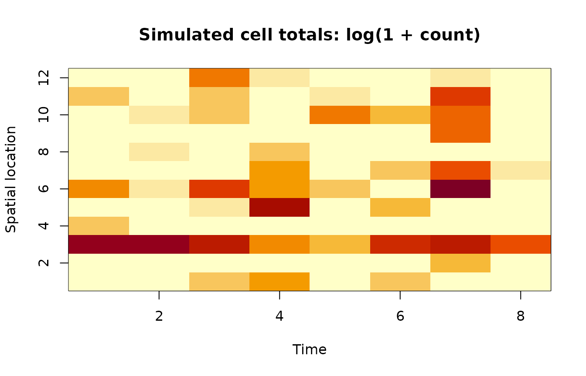

Simulating and Fitting a Spatiotemporal ZINB-GP Model
simulating-zinb-gp.RmdThe model
ZINB.GP models a count in two stages. First, a Bernoulli
variable says whether observation \(j\)
is in an at-risk state:
\[ W_j \sim \operatorname{Bernoulli}(\phi_j), \qquad \operatorname{logit}(\phi_j) = X_j\alpha + V_{s,j}a + V_{t,j}b. \]
If \(W_j=0\), the count is a structural zero. If \(W_j=1\), the count follows a negative-binomial distribution:
\[ Y_j \mid W_j=1 \sim \operatorname{NB}(r,\psi_j), \qquad \operatorname{logit}(\psi_j) = X_j\beta + V_{s,j}c + V_{t,j}d. \]
With the package’s parameterization, \(\operatorname{E}(Y_j\mid
W_j=1)=r\exp(\eta_{2j})\). Thus Alpha describes the
at-risk probability and Beta describes conditional count
intensity. The marginal expected count is the product of those two
quantities.
The vectors \(a,c\) are spatial effects and \(b,d\) are temporal effects. Each has a noisy squared-exponential GP prior
\[ \sigma^2\{\kappa K_\ell + (1-\kappa)I\}. \]
Here, \(\sigma^2\) is marginal variance, \(\ell\) is a length scale, and \(\kappa\) is the fraction of variance attributed to structured dependence.
Build a correctly paired space-time design
The rows of Vs, Vt, X, and
y must refer to the same observations. The helper below
samples a number of replicates for every spatial-temporal cell and then
repeats the paired cell indices. This construction gives every row of
Vs and Vt a shared space-time identity and
keeps both matrices aligned with the corresponding rows of
X and y.
library(Matrix)
library(mvtnorm)
library(ZINB.GP)
#>
#> Attaching package: 'ZINB.GP'
#> The following object is masked from 'package:stats':
#>
#> kernel
make_design <- function(n_space, n_time, mean_replicates) {
cell_n <- matrix(
rpois(n_space * n_time, mean_replicates),
nrow = n_space
)
cells <- expand.grid(
spatial = seq_len(n_space),
temporal = seq_len(n_time)
)
spatial_id <- rep(cells$spatial, times = as.vector(cell_n))
temporal_id <- rep(cells$temporal, times = as.vector(cell_n))
n <- length(spatial_id)
Vs_full <- as.matrix(sparseMatrix(
i = seq_len(n), j = spatial_id, x = 1,
dims = c(n, n_space)
))
Vt_full <- as.matrix(sparseMatrix(
i = seq_len(n), j = temporal_id, x = 1,
dims = c(n, n_time)
))
list(Vs_full = Vs_full, Vt_full = Vt_full, cell_n = cell_n)
}
n_space <- 12
n_time <- 8
design <- make_design(n_space, n_time, mean_replicates = 3)
N <- nrow(design$Vs_full)
N
#> [1] 282Baselines and intercepts
An intercept together with every column of both one-hot indicator
matrices is rank deficient. ZINB_GP_orig(), and the full-GP
route through ZINB_GP(), use the first spatial level and
first temporal level as baselines:
-
Xcontains an explicit intercept; - the first columns of
Vs_fullandVt_fullare removed; - the first rows and columns of the distance matrices are removed internally;
- the remaining GP effects are sampled directly from the corresponding reduced covariance matrices.
The simulation therefore draws the \(S-1\) spatial and \(T-1\) temporal effects directly from these reduced GP covariance matrices. The fixed intercept is the linear predictor for an observation at both baseline levels, and each retained effect is the additive departure associated with its nonbaseline level. This parameterization gives a full-rank design and matches the covariance model used for estimation.
coords <- cbind(runif(n_space), runif(n_space)) * 1000
time_coord <- matrix(0:(n_time - 1) * 50, ncol = 1)
Ds <- as.matrix(dist(coords))
Dt <- as.matrix(dist(time_coord))
Vs <- design$Vs_full[, -1, drop = FALSE]
Vt <- design$Vt_full[, -1, drop = FALSE]
stopifnot(
ncol(Vs) + 1 == nrow(Ds),
ncol(Vt) + 1 == nrow(Dt),
nrow(Vs) == nrow(Vt)
)The coordinate units are deliberately large enough for the package’s pre-MCMC kernel-conditioning screen. The generating length scales below are expressed in those same units, so this numerical scaling does not change the intended correlation pattern.
Draw latent effects and counts
The package squares the supplied distances before applying its
default kernel. We do the same when generating the latent effects. The
reduced covariance matrices exactly match the identified model fitted by
ZINB_GP_orig().
noisy_covariance <- function(distance, length_scale, sigma, kappa) {
correlation <- exp(-(distance^2) / length_scale^2)
sigma^2 * (kappa * correlation + (1 - kappa) * diag(nrow(distance)))
}
spatial_distance <- Ds[-1, -1, drop = FALSE]
temporal_distance <- Dt[-1, -1, drop = FALSE]
a <- drop(rmvnorm(1, sigma = noisy_covariance(
spatial_distance, length_scale = 350, sigma = 1, kappa = 0.5
)))
c <- drop(rmvnorm(1, sigma = noisy_covariance(
spatial_distance, length_scale = 250, sigma = 1, kappa = 0.5
)))
b <- drop(rmvnorm(1, sigma = noisy_covariance(
temporal_distance, length_scale = 100, sigma = 0.5, kappa = 0.2
)))
d <- drop(rmvnorm(1, sigma = noisy_covariance(
temporal_distance, length_scale = 150, sigma = 0.5, kappa = 0.2
)))
x <- rnorm(N)
X <- cbind("(Intercept)" = 1, x = x)
alpha <- c(-0.25, 0.25)
beta <- c(0.50, -0.25)
r <- 1
eta_at_risk <- drop(X %*% alpha + Vs %*% a + Vt %*% b)
p_at_risk <- plogis(eta_at_risk)
at_risk <- rbinom(N, size = 1, prob = p_at_risk)
eta_count <- drop(X %*% beta + Vs %*% c + Vt %*% d)
mu_count <- r * exp(eta_count)
y <- integer(N)
y[at_risk == 1] <- rnbinom(
sum(at_risk == 1),
size = r,
mu = mu_count[at_risk == 1]
)
c(observations = N, zeros = sum(y == 0), positive = sum(y > 0))
#> observations zeros positive
#> 282 213 69The heatmap below is a useful first check. It shows cell totals rather than individual replicates, making both zero inflation and clusters of large counts visible on the modeled support.
cell_id <- max.col(design$Vs_full) +
n_space * (max.col(design$Vt_full) - 1)
cell_sum <- tapply(y, cell_id, sum)
cell_total <- numeric(n_space * n_time)
cell_total[as.integer(names(cell_sum))] <- cell_sum
cell_total <- matrix(cell_total, nrow = n_space)
image(
x = seq_len(n_time),
y = seq_len(n_space),
z = t(log1p(cell_total)),
xlab = "Time",
ylab = "Spatial location",
main = "Simulated cell totals: log(1 + count)",
col = hcl.colors(20, "YlOrRd", rev = TRUE)
)
Fit the full model
The following call uses GPs in both components. It is not evaluated while the vignette is built because a useful MCMC run is intentionally much longer than a CRAN vignette should take.
fit <- ZINB_GP(
X = X,
y = y,
coords = coords,
Vs = Vs,
Vt = Vt,
Ds = Ds,
Dt = Dt,
nsim = 20000,
burn = 5000,
thin = 5,
save_ypred = TRUE,
print_progress = TRUE,
use_count_gp = TRUE,
use_inflation_gp = TRUE
)The rows of coords identify the full set of spatial
levels, including the baseline. Ds and Dt
control the dense GP covariances. Distance and length scale share the
same units: multiplying a distance matrix by a constant requires
multiplying its length scale by that constant to preserve the same
covariance.
The entry point also supports simpler models. For example, this call keeps the spatial and temporal GPs only in the count component:
fit_count_gp <- ZINB_GP(
X = X, y = y, coords = coords,
Vs = Vs, Vt = Vt, Ds = Ds, Dt = Dt,
nsim = 20000, burn = 5000, thin = 5,
use_count_gp = TRUE,
use_inflation_gp = FALSE
)The component flags encode which residual dependence the model represents. A count GP explains residual variation in conditional intensity; an inflation GP explains residual variation in whether an observation is at risk. The selected combination should follow the scientific role assigned to each process.
Interpret posterior draws
Each row of fit$Alpha and fit$Beta is a
retained posterior draw. The random effects are in A and
B for the at-risk component and C and
D for the count component. R contains
dispersion draws, and Noise1s, Noise1t,
Noise2s, and Noise2t are the
structured-variance fractions \(\kappa\).
For a fitted model, equal-tailed intervals can be computed directly:
apply(fit$Alpha, 2, quantile, probs = c(0.025, 0.5, 0.975))
apply(fit$Beta, 2, quantile, probs = c(0.025, 0.5, 0.975))Credible intervals summarize posterior uncertainty; they do not establish that the Markov chain mixed well. The Oregon case-study vignette shows how to wrap these matrices with standard MCMC packages and calculate effective sample size.